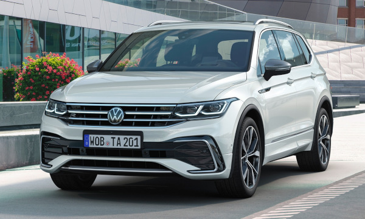

O Volkswagen Tiguan é um SUV médio produzido pela Volkswagen, conhecido pelo bom espaço interno, conforto e alto nível de tecnologia. O modelo possui design moderno e robusto, sendo indicado tanto para uso urbano quanto para viagens em família. Ele costuma ser equipado com motor 2.0 TSI turbo, que pode gerar cerca de 186 cv de potência, combinado com câmbio automático, oferecendo bom desempenho e dirigibilidade. Além disso, o Tiguan oferece diversos recursos tecnológicos, como painel digital, central multimídia, sistemas de assistência ao motorista e, em algumas versões, espaço para até sete passageiros. Por isso, é considerado um dos SUVs mais completos da marca.
Voltar